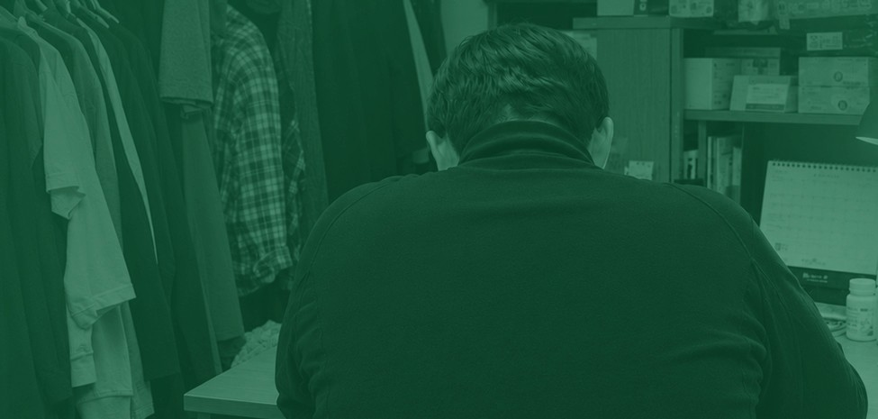
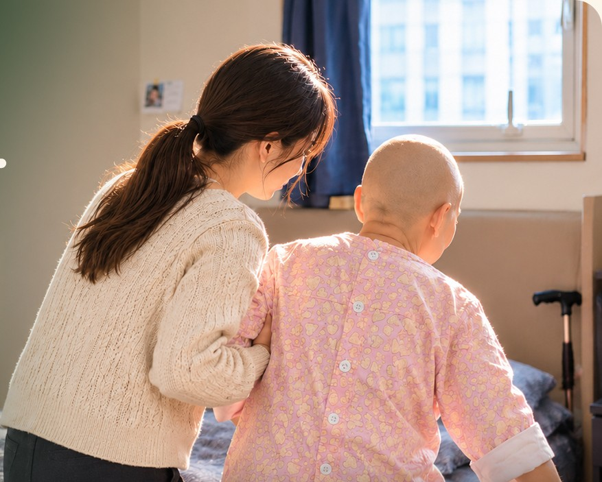
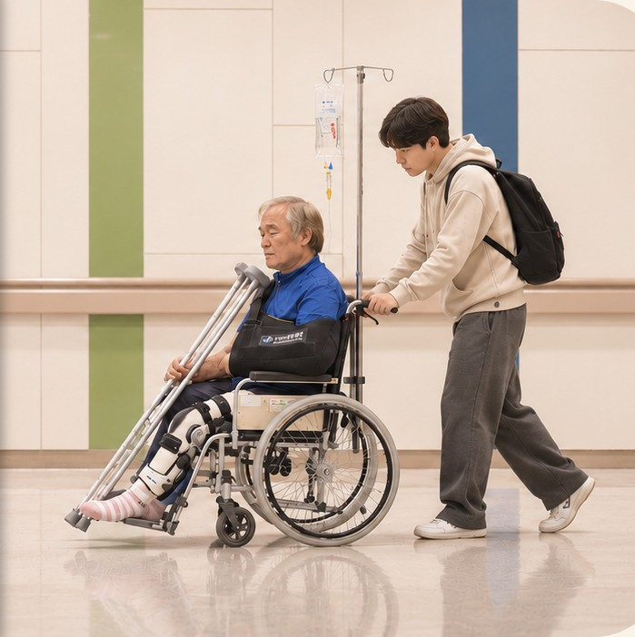
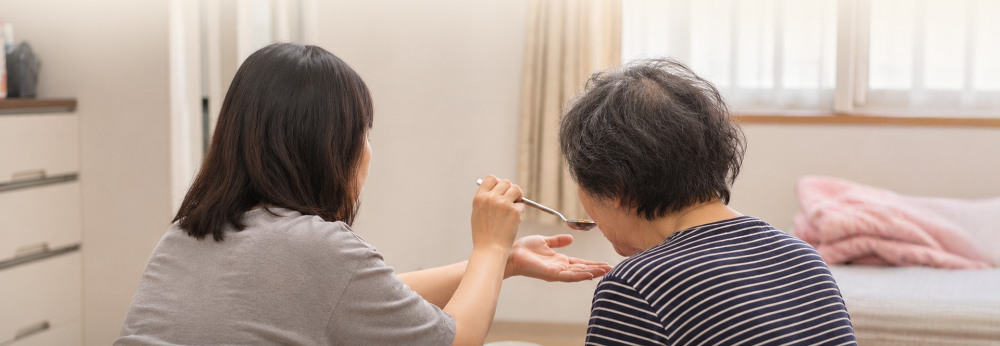
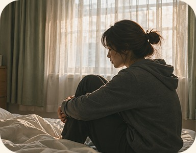
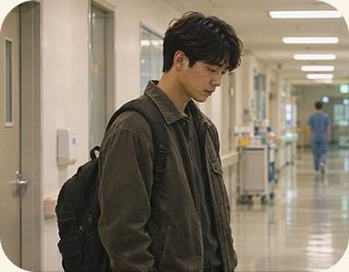
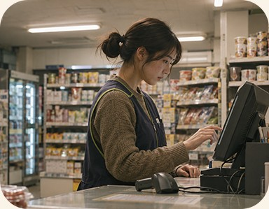
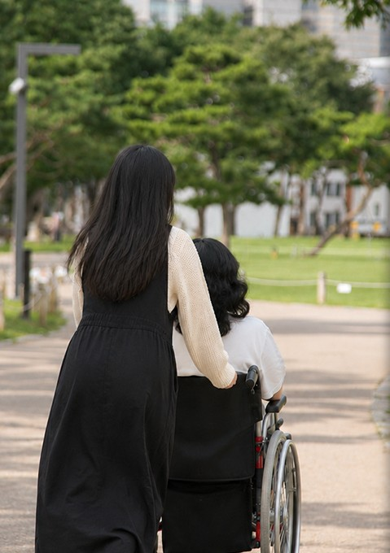
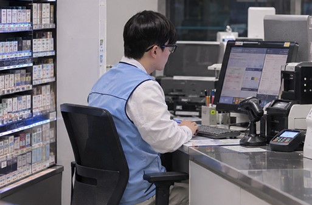
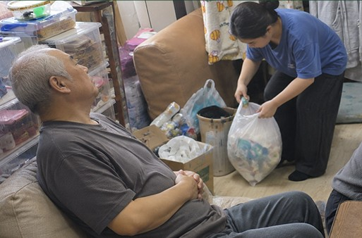

24시간을 움직여도
영케어러의 삶은 멈춰있습니다.

시네마그래프 영상

* 실제 영케어러의 사진을 기반으로, 초상권 보호를 위해 일부 AI 보정하였습니다.

시네마그래프 영상
영케어러는 질병이나 장애 또는 노화로
돌봄이 필요한 가족의 일상을 책임지는 청년입니다.
친구들이 배우고 경험하며 자신만의 내일을 준비하는 동안
어떤 청년은 약을 챙기고 식사를 준비하고 병원에 동행합니다.
사랑하는 가족과 함께 살아가는 일과 자신의 미래를 꿈꾸는 일이
서로 멀어지지 않도록 지금 우리의 관심이 필요합니다.
* 실제 영케어러의 사진을 기반으로, 초상권 보호를 위해 일부 AI 보정하였습니다.


21.6시간
한 주의 상당한 시간을
가족 돌봄에 사용합니다.
46.1개월
오랜 시간 누군가의
보호자로 살아갑니다.
7.3시간
돌봄의 무게를 나눌
지원이 필요합니다.
보건복지부 「2022년 가족돌봄청년 실태조사」(2023년 발표)
* 실제 영케어러의 사진을 기반으로, 초상권 보호를 위해 일부 AI 보정하였습니다.
누군가는 오늘을 즐기고,
누군가는 오늘도 가족을 돌봅니다.
* 실제 영케어러의 사진을 기반으로, 초상권 보호를 위해 일부 AI 보정하였습니다.

01“아무도 없는 외딴 섬에
엄마와 같이 갇혀 버린
기분이에요.”
간호한 지 3년째, 아무도 없는 집에서 말을 온전히 할 수 없는
엄마와 단둘이 보낸 시간도 3년입니다. 지안이는 마음을
터놓을 곳도 힘든 이야기를 위로 받을 곳도 없습니다.

02“매번 연차를 쓸 수는 없으니…
그만둘 수밖에 없었죠.
방법이 없잖아요.”
매번 병원에 갈 때마다 보호자의 동행이 필수이다 보니 창민이는
어렵게 들어간 회사를 그만둘 수밖에 없었습니다. 그래도
아버지를 봐줄 곳도 믿고 맡길 사람도 없어 창민이는 홀로
그 짐을 감당하고 있습니다.

03“병원비에 약값만 해도 벅찬데
생활비가 없으니
새벽 알바라도 해야죠.”
할머니 병원비를 벌기 위해 낮에는 학업과 가족 돌봄을 병행하고
잠을 줄여 새벽까지 편의점에서 아르바이트하는 수연이.
쉴 새 없이 반복되는 일상에 건강도 나빠지고 있지만
생활비 걱정에 제대로 쉴 수도 없습니다.
* 실제 영케어러의 사진을 기반으로,
초상권 보호를 위해 일부 AI 보정하였습니다.

응원 메세지를 남겨주신 분들 중 추첨을 통해
커피 쿠폰을 드립니다.
혼자 모든 걸 감당하지 않아도 괜찮아요.
당신의 꿈이 계속 이어지길 응원합니다.
* 실제 영케어러의 사진을 기반으로, 초상권 보호를 위해 일부 AI 보정하였습니다.
청년들을 향한 따뜻한 마음이 모였어요!
많은 분들이 전해주신 소중한 응원 메시지입니다.
세상에 나눔의 다리를 이어가는 월드휴먼브리지와 함께
영케어러들에게 나눔을 이어주세요
* 실제 영케어러의 사진을 기반으로, 초상권 보호를 위해 일부 AI 보정하였습니다.


월드휴먼브리지와 함께 후원해 주시면
돌봄에 지친 영케어러에게 응원과 지원을
이어가는 데 힘이 됩니다.
한 사람의 시간을 지키는 일이
한 사람의 미래를 지키는 일이 되도록